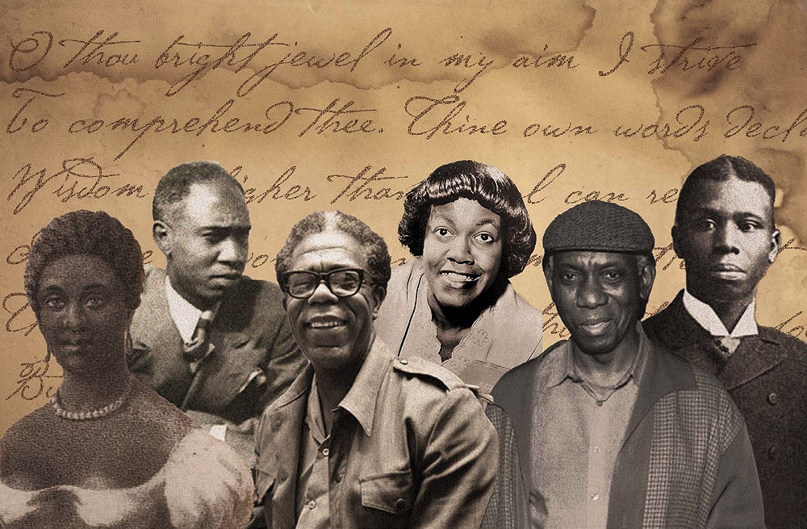
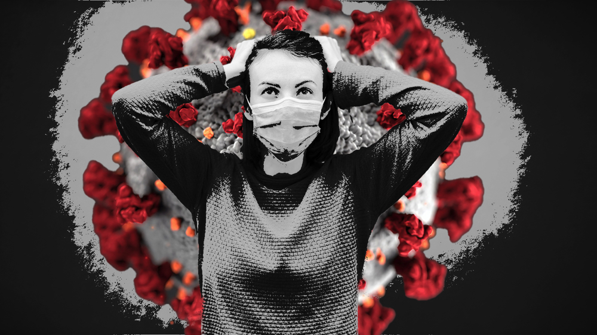
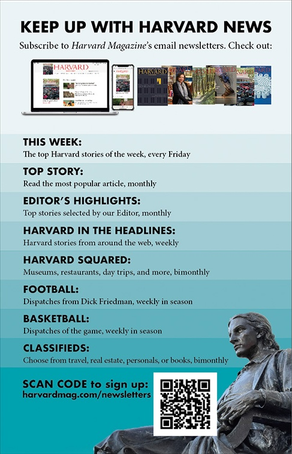
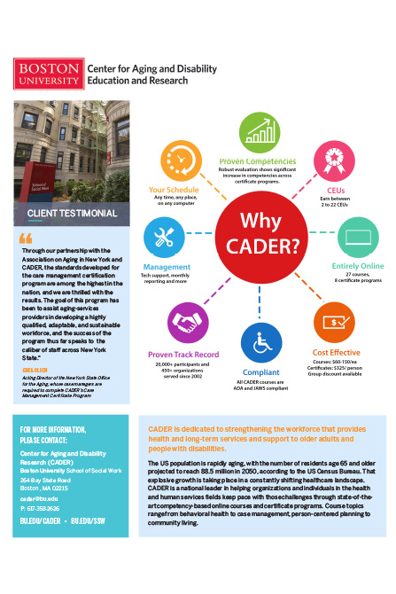
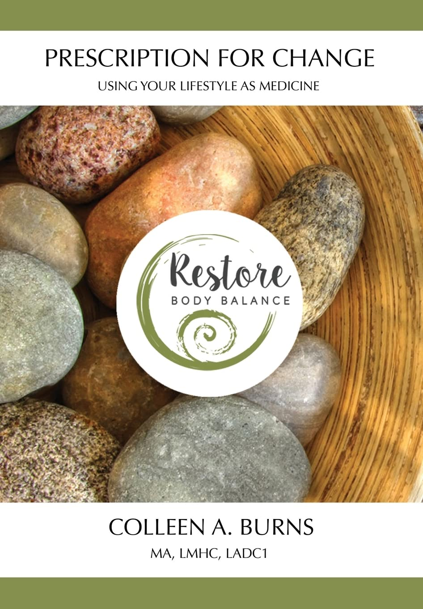
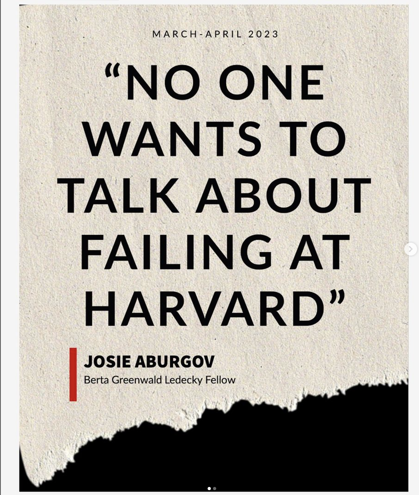
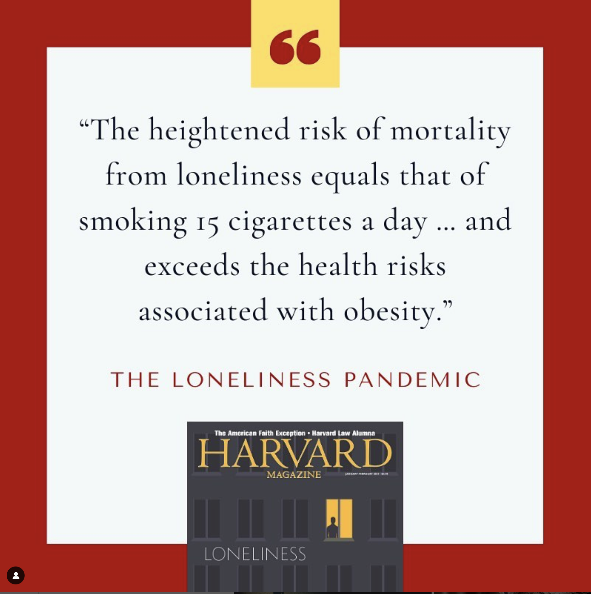
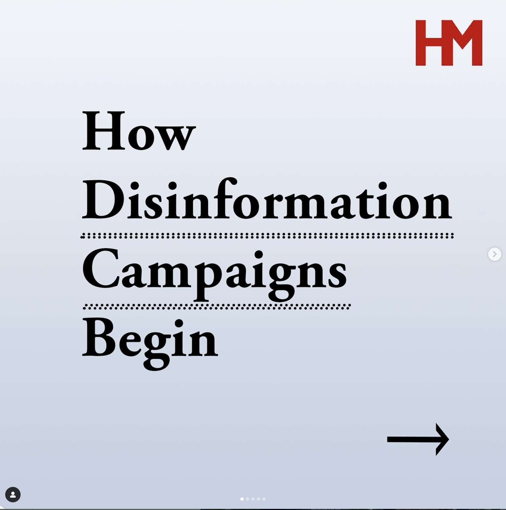

Creative DirectionMultimedia DesignDigital & AI Strategy
I turn complex ideas into compelling visuals, audience-focused content, and more efficient creative workflows.
800+Published visual works across illustration, photography, motion graphics, and video.
1M+Views on the magazine's top story of the year, supported by my editorial illustration.
Record-breaking social strategyInstagram-to-article click-through performance for a post featuring my social graphic.
ABOUT
I'm Niko Yaitanes, a multimedia producer with more than eight years of experience across design, photography, video, social content, and digital strategy. I turn complex ideas into compelling visuals and connect creative decisions to audience needs.
As Senior Multimedia Producer at Harvard Magazine, I lead visual storytelling, social strategy, and AI workflow development across print and digital—from editorial illustrations and video to content that drives article readership and tools that give creative teams time back.
Boston University · BS in Communication, Cinema and Media Studies concentration Responsive Web Design certification · 300 hours, HTML and CSS
Digital, print, branding, and experimental graphic design projects.
Making complex research accessible
Editorial illustration · Visual concept development · Print and digital
Challenge
Translate specialized research into an immediate, engaging visual for a broad readership.
Solution
Develop conceptual montage illustrations that connect the central idea of each story to an accessible visual metaphor, with execution suited to print and digital publishing.
Outcome
My illustration accompanied the Epstein–Barr virus and multiple sclerosis article, the magazine’s top story of the year with more than one million views. The readership figure reflects the article’s performance; illustration was one part of its presentation.
Clarifying a continuing education offering
Boston University CADER · Marketing design · Information hierarchy
Challenge
Present a range of continuing education options in a format prospective participants can quickly understand.
Solution
Create a visual wheel that organizes the offerings into a clear, scannable marketing piece.
Outcome
The flyer helped communicate the program’s options and supported participant recruitment.

Editorial design: montage accompanying an article that ran in print and online for Harvard Magazine
Editorial design: an abstract montage for a Harvard Magazine article on Epstein-Barr virus as the cause of MS. This was the top story of the year, with over a million views.

Editorial design: an abstract montage for a Harvard Magazine article on Long COVID.

Marketing design: Print advertisement that ran in Harvard Football's programs for a season.

Marketing design: At Boston University CADER, I created a wheel to communicate their offerings to those interested in CEU trainings.

Restore Body Balance Book cover: I designed the book's typography, the cover, and the layout of its accompanying journal.
Campaign strategy, content creation, and platform storytelling.
Turning Instagram attention into article readership
Harvard Magazine · Social content strategy · Graphic design
Challenge
Give an Instagram audience a compelling reason to move from the feed to a full editorial story.
Solution
Design a text-led graphic about failing at Harvard, using a clear editorial hook and a platform-specific presentation to spark interest in the article.
Outcome
The post set the account’s record for Instagram-to-article click-throughs. This demonstrates the value of adapting an editorial story to the audience and platform.

Text-based infographic to convert readers from Instagram to a Harvard Magazine article. It broke the record for the most click throughs for Instagram from a post for the account.

Text-based infographic with the goal of encouraging conversation surrounding an article

Text-based infographic with the goal of informing an engaged Harvard alumni audience
Practical AI tools that streamline editorial production, support consistent outputs, and reduce repetitive work.
Giving creative teams time back
Harvard Magazine · Workflow analysis · Custom GPTs and local scripts
Challenge
Reduce recurring editorial and production tasks that take time away from creative work.
Solution
Build custom GPTs for repeatable workflows and develop scripts for tasks suited to local processing. Apply the tools to practical needs such as SEO, accessibility, and production support.
Outcome
The tools save hours of work each week for me and my colleagues, creating more capacity for editorial and creative priorities.

SOCIAL MEDIA
Campaign strategy, content creation, and platform storytelling.
Turning Instagram attention into article readership
Harvard Magazine · Social content strategy · Graphic design

Text-based infographic to convert readers from Instagram to a Harvard Magazine article. It broke the record for the most click throughs for Instagram from a post for the account.

Text-based infographic with the goal of encouraging conversation surrounding an article

Text-based infographic with the goal of informing an engaged Harvard alumni audience